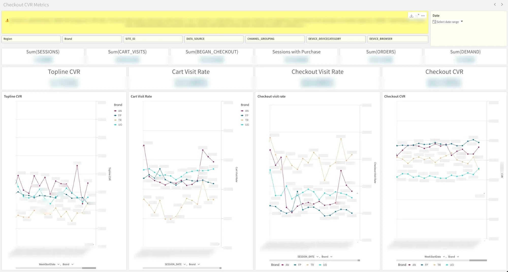
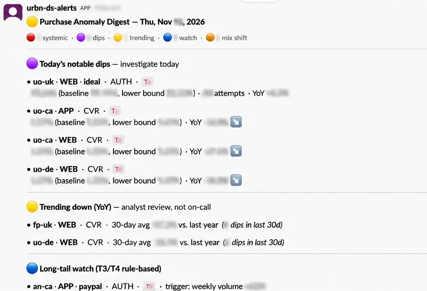

01The problem
Checkout conversion is the number everyone in Purchase watches, but across four brands, multiple regions, web and app, and every payment method, there are far too many lines to eyeball. A dip in one brand's app conversion in one country can sit unnoticed in an aggregate that looks perfectly healthy.
I wanted two things: one place to see the whole checkout funnel, sliced any way we needed, and a system that tells us when something is actually wrong, without crying wolf every weekend.
02Discovery
Before building anything, I mapped the tables across URBN's data ecosystem that held the pieces of the funnel: sessions, cart visits, checkout starts, orders and demand, and the dimensions we'd want to cut them by.
- Volume measures: sessions, cart visits, began checkout, sessions with purchase, orders, demand
- Dimensions: region, brand, site, data source, channel grouping, device category, browser
- Grain: daily, so the same tables could power both trend lines and day-level anomaly checks
Getting this right up front meant the dashboard and the alerting could share a single source of truth instead of each reinventing the definitions.
03Building the pipeline
- Snowflake aggregates. Built tables and views on top of the source data, mostly pre-aggregated, so the dashboard reads small, fast tables instead of raw event data.
- Scheduled refresh. Set up Snowflake tasks to rebuild those tables every day, with no manual pulls.
- Qlik dashboard. Imported the tables into Qlik, which reloads every day at 10 AM so the team starts the day with yesterday's numbers.
- Slack alerting. Layered anomaly detection on the same data and pushed anything outside its expected range into a Slack channel as a daily digest.
04The dashboard
The Qlik dashboard puts the whole funnel on one screen: raw volumes across the top, four headline rates beneath them, and each rate trended by brand, with filters for every dimension from discovery.
Sessions that end in a purchase. The headline number.
How many sessions make it to the cart.
How many sessions begin checkout.
How many checkouts become orders.
Splitting topline conversion into its funnel steps is what makes a dip actionable. "CVR is down" starts a hunt; "checkout CVR is down on UO Canada app" points at a team.

05Alerting methodology
The hard part of alerting isn't detecting change. It's not firing on noise. Conversion naturally swings by day of week, by promo, and wildly on low-volume slices like a single payment method in a small market. A single threshold either misses real problems or floods the channel.
So I evaluate five bounds methods for every combination of slice, metric and day, and the digest only fires on consensus: the STL method plus at least one other must agree. Alerts are then de-duplicated against cross-sectional events, so one site-wide issue doesn't show up as twenty separate dips.
| Method | Type | Notes |
|---|---|---|
| M1 · Rolling 28d ±2σ | Static σ | The original approach. Simple and interpretable, but doesn't model day-of-week or trend. |
| M2 · DOW-aware | Same-day-of-week comparison | Compares each day to its last four same-weekday values. Reduces weekday/weekend bias, but bounds get noisy at small samples. |
| M3 · EWMA | Exponentially weighted | Reacts to recent shifts, but can absorb a persistent dip into the new baseline within about two weeks. |
| M4 · STL residual | Trend + weekly seasonality | Primary for high-volume slices (T1/T2). Decomposes the series and places bounds on the residual, not the raw value, so weekend lifts don't fire as anomalies. |
| M5 · Beta CI | Bayesian, volume-aware | Best for sparse slices (T3/T4). Treats attempts as Bernoulli trials, so intervals widen automatically at low volume. At high volume it over-fires, so it's a sensitivity check rather than a primary source. |
Why run all five?
Each method fails in a different way. Static bounds ignore seasonality, same-weekday comparisons get noisy, EWMA forgets, and Beta intervals are too strict at scale. Requiring agreement filters out each method's particular noise, while running them side by side shows when STL and a second method both catch a real signal that neither would be trusted on alone.
Slices are also tiered by volume. High-volume slices lean on STL; the long tail of small markets and payment methods (T3/T4) uses volume-aware and rule-based checks, such as a minimum weekly volume, so a handful of orders can't trigger a page.
06The Slack digest
Every morning a single digest posts to the alerts channel, grouped by how urgently someone needs to act:
The same drop across many slices at once, rolled up into one event.
Consensus breaches of the lower bound, with baseline, bound and year-over-year.
Slow year-over-year declines. Worth a look, not worth paging on-call.
Rule-based checks on sparse slices, and shifts in traffic or payment mix.

Each line carries the context needed to triage without opening anything else: brand and region, platform, metric, the observed value against its baseline and lower bound, and the year-over-year change.
07Skills demonstrated
- Data discovery: mapped the funnel across URBN's data ecosystem before writing a pipeline
- Data engineering: Snowflake aggregate tables and scheduled tasks for daily refresh
- BI & visualization: a Qlik dashboard that breaks conversion into actionable funnel steps
- Statistical anomaly detection: five bounds methods with a consensus rule to keep alerts trustworthy
- Operational design: a tiered Slack digest that separates "act today" from "keep an eye on"
- End-to-end ownership: from raw tables to the alert a team acts on